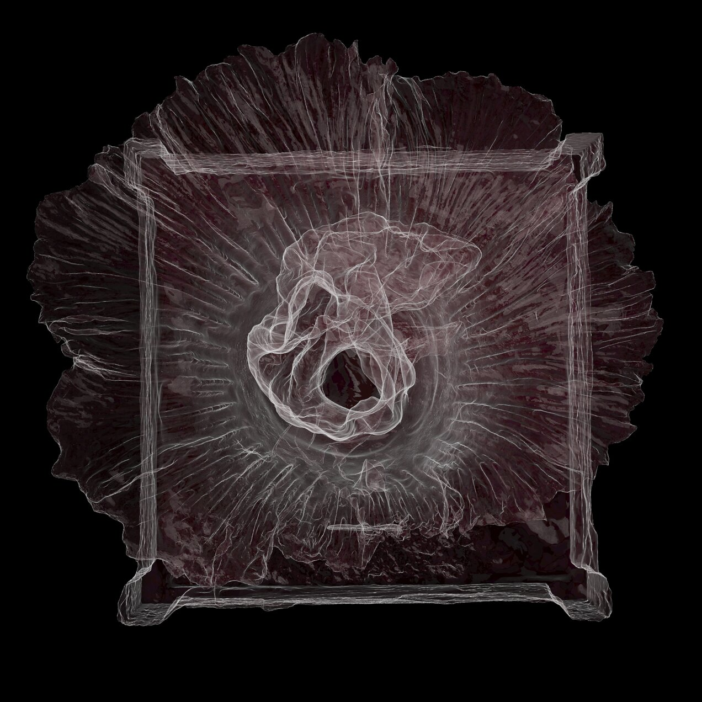

Mission Statement
Today as we face geopolitical instability, climate catastrophe, and population decline, choosing to believe in and conserve our planet for the future is an act of faith. While religious institutions decry a decline in younger supplicants, our generation increasingly seeks spirituality in Nature. Our project taps into this inherent wellspring of awe in humanity by recontextualizing this connection between Man and Nature, Art and Science, Life and Death through the apotheosis of the corpse flower. By nurturing audience-sourced narratives around this plant portal, we create modern mythologies for collective healing and storytelling, too often reserved for prophets of the past.
